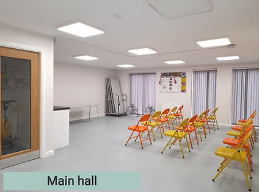

FAQs
A List of Common Questions For Your Information
We have tried to compile a list of commonly asked questions and their answers, for your information. If you have any questions that are not answered here, please get in touch and we will be happy to help!
If you are interested in volunteering, please get in touch. We rely on volunteers for a range of tasks including helping in the community cafe, events, cleaning etc!

What types of activities do you offer?
Activities change regularly so far we have delivered the following: cake decorating, discovering play, parents are experts, STEPS, Christmas crafts, and stay and play sessions, Halloween party and Christmas grottos run by the Corner House Group.
Please check out our Whats on page and Facebook for more details.
Can I volunteer at Pat Midgley Community Hub?
Yes! The hub relies on volunteers for a range of tasks including helping in the community cafe, events, cleaning etc! Please get in touch if you are interested in volunteering!
I need a meeting space, can I hire your venue?
Yes! Our space will be available to hire out for corporate events, and children's parties. Please see our Room Hire page for more details.
Where is the hub located?
Pat Midgley Community Hub is located at 331 Manor Oaks Road, S2 5EE. We are located right opposite the Go Local shop where Manor Oaks Road meets Manor Oaks Place.
What is the best way to contact the hub?
The quickest ways to contact us is by calling our landline (0114 349 1481), using our Contact Us page, or messaging via our Facebook page @patmidgleych.
Is there any parking?
Unfortunately we only have 1 disabled parking bay on the front of the centre. There is on street parking nearby. Please park in an appropriate way respecting the residential neighbours. Don't block any drives, park in any parking spaces or on double yellows.
Is the building accessible for wheelchairs?
Yes. The building is flat level with no steps and has an accessible toilet.
Do you have baby changing facilities?
Yes. There is a baby changing table in the accessible toilet.